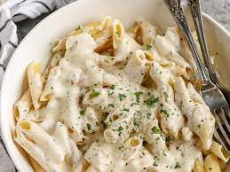

Pastas
Indulge in the comforting embrace of our pasta dishes, where Italian classics take a desi twist. From the creamy Chicken Alfredo Pasta to the fiery Spicy Arrabiata Penne, each forkful unveils a harmonious blend of Italian pastatechniques and Pakistani flavors that will leave your taste buds craving for more.
-
Chicken Alfredo Pasta
- Creamy alfredo pasta with chunks of marinated chicken and a hint of spice.
-
Spicy Arrabiata Penne
- Penne pasta tossed in a fiery tomato sauce infused with Pakistani spices.
-
Desi Fusion Lasagna
- Layers of lasagna sheets, minced meat, and a blend of Pakistani spices and herbs.
-
Creamy Chicken Tikka Pasta
- Grilled chicken tikka in a creamy tomato sauce with penne pasta.
-
Karachi-style Bolognese Pasta
- Pasta tossed in a flavorful minced meat sauce with desi spices.
Back to Home